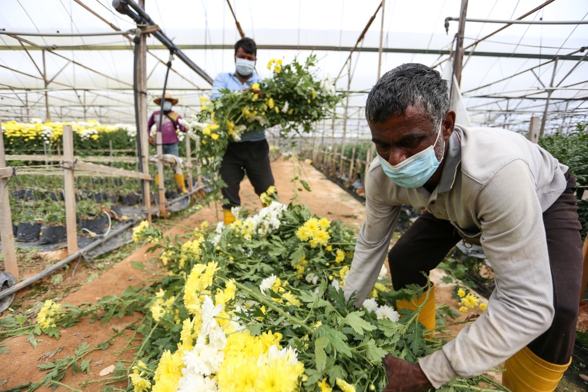

People Who live in Cameron Highlands
The diversity of the Cameron Highlands is also greatly enhanced by the presence of Indians,
mostly of Tamil origin. The region's economy is made more vibrant by the large number of people working in the
service and agricultural sectors. At celebrations like Deepavali and Thaipusam, when the community gathers to
partake in traditional dance, music, and food, one may witness the richness of Indian cultural legacy.
Important hubs for maintaining and carrying out their customs are temples and other cultural venues.
Learn More